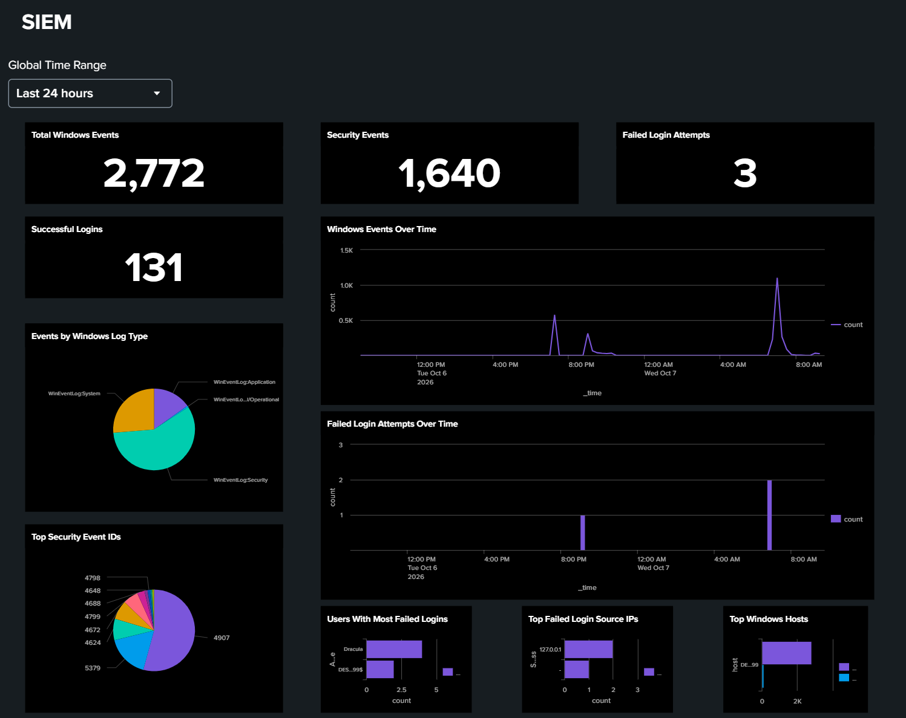

> Cybersecurity and AI enthusiast with a foundation in Python, networking, and robotics. Interested in ethical hacking, vulnerability assessment, and security monitoring. Passionate about identifying security risks.
>Researching and developing cybersecurity tools and practical security projects.
>Creating dashboards to monitor system activity and security events.
>Working on encryption techniques to protect sensitive information.
>Performing security analysis and exploring vulnerability assessment methods.
TECHRADIANCE
& June-2024 to January-2025
> Employed as a Trainer Executive at Techradiance, teaching Robotics, Coding, and Web Design to CBSE andInternational school students
> Served as a Robotics Research Fellow, conducting training sessions in technical subjects and collaborating with the R&D department to develop new course modules, products, and presentations.
> Taught online and offline courses in robotics, block coding, web and Python.
> Maintained and managed a complete Robotics Lab setup in schools for practical classes.
> Conducted international Zoom classes for students from different countries.
// PROJECTS
SIEM Dashboard Development | Splunk
Developed a Security Information and Event Management (SIEM) dashboard using Splunk to monitor system activity, analyze security logs, and identify potential threats. Worked with Windows event logs and Splunk Search Processing Language (SPL) to collect, filter, search, and analyze security-related data. Created interactive dashboard panels to visualize security events, failed login attempts, event trends, and suspicious activities. Implemented time-based monitoring, source IP analysis, event filtering, and alert configuration to improve security visibility and threat detection. Designed visualizations using charts, tables, and statistical panels to support security event investigation. Worked on monitoring authentication activities, identifying unusual login patterns, and generating alerts for potential security incidents. Gained practical experience in SIEM operations, log analysis, dashboard development, security monitoring, and incident investigation. This project strengthened my understanding of how security monitoring tools help organizations detect suspicious behavior, analyze events, and respond to potential cyber threats.

A caption for the above image.
ENCRYPTION Caesar and Vigenere Cipher Tool | Python
Developed a Python-based encryption and decryption tool implementing Caesar and Vigenere cipher algorithms. Created functions to encrypt and decrypt text using customizable keys and character shifting techniques. Implemented key-based encryption, alphabetic character processing, and file encryption and decryption functionality. Explored classical cryptography concepts, cipher algorithm implementation, and cryptanalysis techniques. Applied frequency analysis to understand cipher-breaking methods and analyze encrypted messages. Designed a simple graphical user interface using Tkinter to improve user interaction. This project strengthened my Python programming, problem-solving, cryptography, and analytical skills while building a practical understanding of encryption and secure communication fundamentals.
Autonomous Robotics & Development
Developed and programmed specialized robotic systems, including Line Following Robot (LFR), Bluetooth-Controlled Robot, Otto Robot, and Soccer Robot. Worked on robot assembly, hardware integration, programming, sensor implementation, and motor control to achieve autonomous and remote-controlled movement. Implemented sensor-based navigation, obstacle detection, Bluetooth communication, and movement control. Explored robotics automation, embedded systems, and intelligent control mechanisms. Tested and debugged robotic systems to improve performance, accuracy, and functionality. Gained practical experience in Python programming, Arduino-based development, electronics, hardware troubleshooting, and robotics problem-solving.